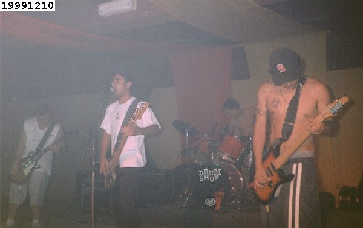
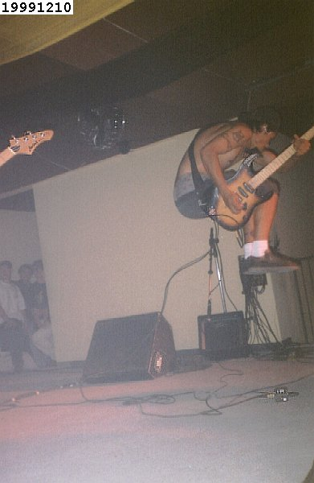
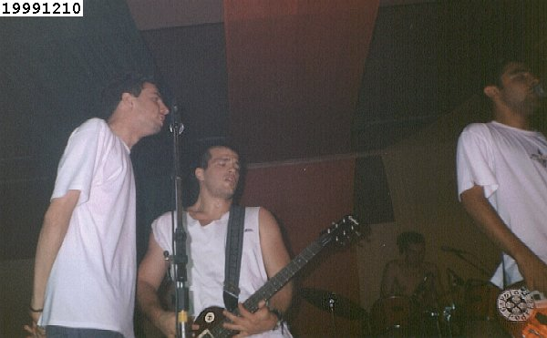
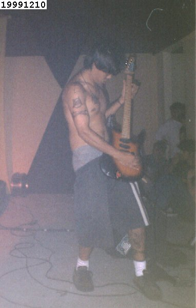
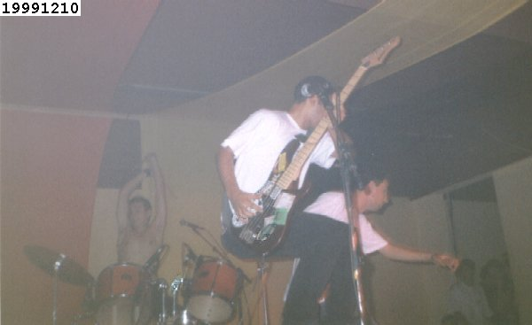
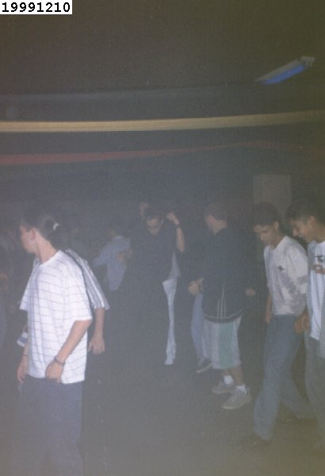
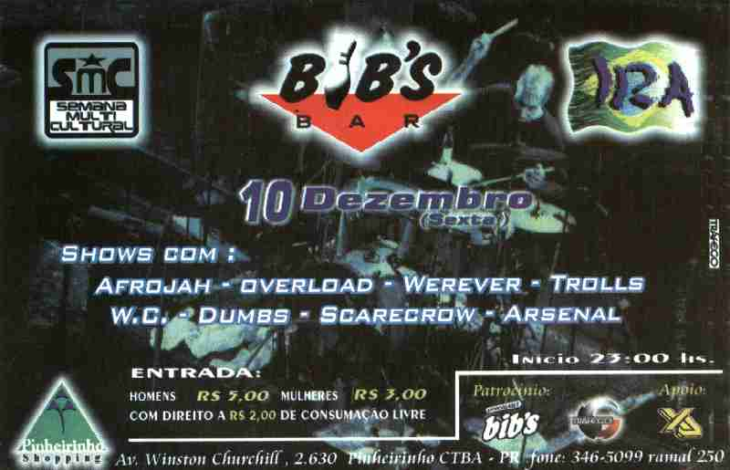

![[voltar pra casa]](../imagens/casa.gif)
show 19991210
pinheirinho shopping: OVERLOAD, WHEREVER, TROLLS, W.C., ARSENAL, SCARECROW e DUMBS
esse show tinha tudo para dar errado. e deu. primeiro, por não
ser um show normal e sim um festival de bandas, festa do gecel
do cefet-pr. como todo festival, colocam um monte de bandas de
vários estilos musicais, boas, ruins, heavy metal, hardcore,
roque, etc. além disso, o local escolhido foi num bairro
afastado do centro, então apenas quem tinha carro ou carona
poderia ir. pra fechar, o lugar era tradicionalmente povoado
por uma galera "country" e "dance", que estavam lá como maioria,
para dançar suas músicas, e não ver bandas barulhentas. como se
tudo isso não bastasse, o lugar era muito mala, pois não podia
ficar de boné lá dentro, tinha uma "chapelaria" pros agroboys deixarem
seus objetos de desejo, tinha uma grade(?!) separando o público
do palco e os "seguranças" tratavam com violência qualquer tentativa
de pogo e/ou brincadeiras. um de nossos amigos foi
expulso, outro levou uma gravata, outro foi empurrado e caiu no
chão, e por aí foi... foi um cu. antes de começarem os shows, os
"locais" estavam lá, dançando um "dance-country", fazendo
coreografias! e no intervalo das bandas, rolava só esse tipo de
som, como já era de se esperar. todas as bandas tiveram que
ouvir gritos de: "fora!", "chega!", e a maior festa os caras
faziam quando a banda falava: "agora vamos tocar a saideira"...
apesar do ambiente hostil e incompatível, lá fomos nós com o DUMBS. não estávamos com muito tesão, mas mesmo assim tocamos,
agitamos, berramos, por consideração aos nossos amigos que foram
lá nos acompanhar. o aurelio depois ainda tocou com o SCARECROW no mesmo show, lá pelas 4 da manhã, e a receptividade hostil foi
a mesma. infelizmente no geral o show foi ruim. muitas bandas,
muitos estilos, muito longe, muito mala, mas estamos aí, sempre
dispostos a fazer um barulhinho... &:)
repertório:
01 opinião 02 life o'mine 03 se liga e desliga 04 lesson one 05 cdf 06 mentira 07 milho verde 08 espera 09 vou dormir
fotos:
a tradicional primeira foto: a banda. ah! sim, todas as fotos desse show ficaram
meio foscas e ruins, maldito gelo seco palha.

daniel fazendo sua versão do famoso pulo "cadeira invisível" &:)

giga do SCARECROW dando uma força nos vocais

daniel sem a sua alça palha que cai após cada pulo...

ATENÇÃO! ATENÇÃO!!! inédita, única, exclusiva! pela primeira vez na história do
mundo nossas câmeras acuradas conseguiram flagrar um momento que muitos pensavam
que NUNCA iria acontecer: o fejão pulando! e no fundo o aurelio está liberando um cc
no ambiente (talvez isso explique o pulo do fejão...)

e pra finalizar uma cena bucólica e impensada: o aurelio e o nissin no meio dos
"country" zoando com a "coreografia" palha deles (notem como estão todos alinhadinhos,
uma graçinha)

cartaz:
